Полное руководство по Flexbox
Моя цель - предложение широкого ассортимента товаров и услуг на постоянно высоком качестве обслуживания по самым выгодным ценам.
Полное руководство по CSS flexbox. Это полное руководство объясняет все о flexbox, сосредотачиваясь на всех возможных свойствах для родительского элемента (контейнер flex) и дочерних элементов (элементы flex). Оно также включает в себя историю, демонстрации, шаблоны и таблицу поддержки браузеров.
Background
Модуль Flexbox Layout (Flexible Box) (W3C Candidate Recommendation от октября 2017 г.) направлен на обеспечение более эффективного способа размещения, выравнивания и распределения пространства между элементами в контейнере, даже если их размер неизвестен и / или динамичен (Flex значит «гибкий»).
Основная идея flex layout состоит в том, чтобы дать контейнеру возможность изменять ширину / высоту его элементов (и порядок), чтобы наилучшим образом заполнить доступное пространство (главным образом, для отображения на всех типах устройств с любым размером экрана). Flex контейнер расширяет элементы, чтобы заполнить доступное свободное пространство, или сжимает их, чтобы предотвратить переполнение.
Наиболее важно то, что макет flexbox не зависит от направления, в отличие от обычных макетов (block на вертикальной основе и inline на горизонтальной основе). Хотя они хорошо работают для страниц, им не хватает гибкости (без каламбура :-)) для поддержки больших или сложных приложений (особенно когда речь идет об изменении ориентации, изменении размера, растяжении, сжатии и т.д.).
Примечание: Flexbox layout наиболее подходит для компонентов приложения и мелкомасштабных макетов, а Grid layout предназначен для макетов большего масштаба.
Основы и терминология
Поскольку flexbox — это целый модуль, а не одно свойство, он включает в себя множество элементов с набором свойств. Некоторые из них предназначены для установки в контейнере (родительский элемент принято называть «flex контейнер»), в то время как другие предназначены для установки в дочерних элементах (так называемые «flex элементы»).
Если «обычная» компоновка основана как на блочном, так и на inline направлениях, flex layout основана на «направлениях flex-flow». Пожалуйста, посмотрите на этот рисунок из спецификации, объясняющий основную идею гибкого макета.
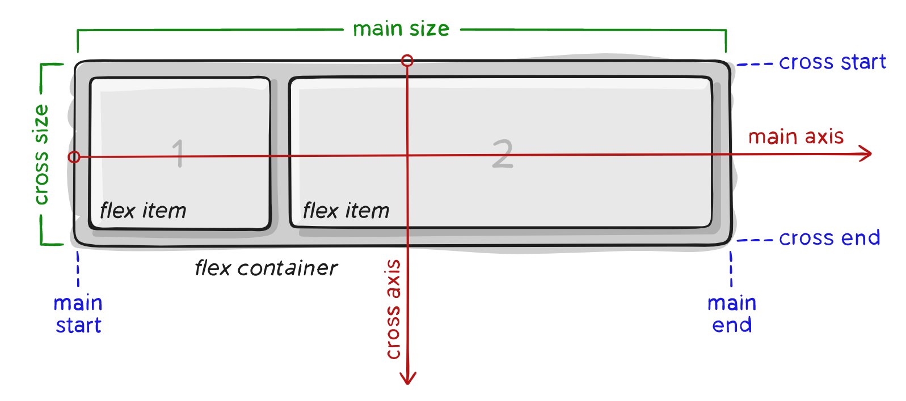
Элементы будут расположены либо в направлении главной оси (main axis от main-start до main-end) или в направлении поперечной оси (cross axis от cross-start до cross-end).
Свойства для Родителя (flex контейнер)
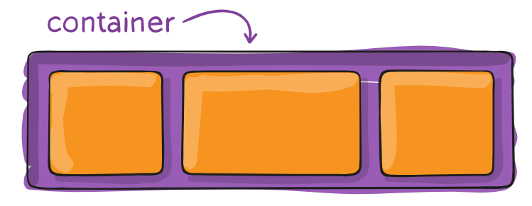
display
Определяет flex контейнер; inline или block в зависимости от заданного значения. Включает flex контекст для всех потомков первого уровня.
.container {
display: flex; /* or inline-flex */
}
Имейте в виду:
Обратите внимание, что CSS-столбцы columns не влияют на flex контейнер.
flex-direction
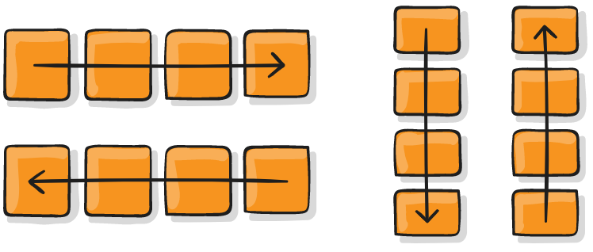
Устанавливает основную ось, таким образом определяя направление flex элементов, помещаемых в flex контейнер. Flexbox — это (помимо дополнительной упаковки) концепция однонаправленного макета. Думайте о flex элементах, как о первичных раскладках в горизонтальных рядах или вертикальных столбцах.
.container {
flex-direction: row | row-reverse | column | column-reverse;
}
flex-wrap
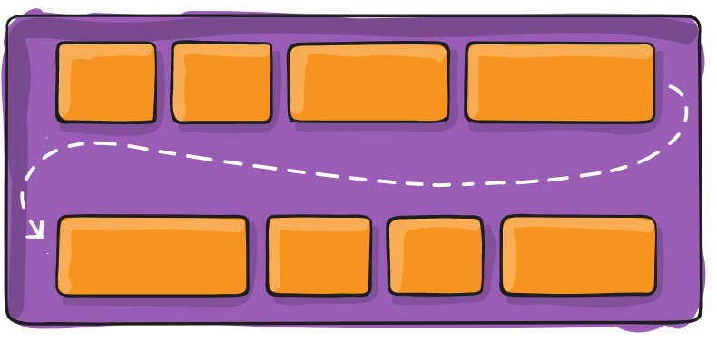
По умолчанию гибкие элементы будут пытаться уместиться на одной строке. Вы можете изменить это и позволить элементам переходить на новую строку по мере необходимости с помощью этого свойства.
.container{
flex-wrap: nowrap | wrap | wrap-reverse;
}
Посмотреть визуальные демоверсии поведения flex-wrap можно здесь.
flex-flow (Применяется к: родительскому элементу flex-контейнера)
Это сокращение для flex-direction и flex-wrap свойств, которые вместе определяют основные и поперечные оси flex контейнера. Значением по умолчанию является row nowrap.
flex-flow: <‘flex-direction’> || <‘flex-wrap’>
justify-content
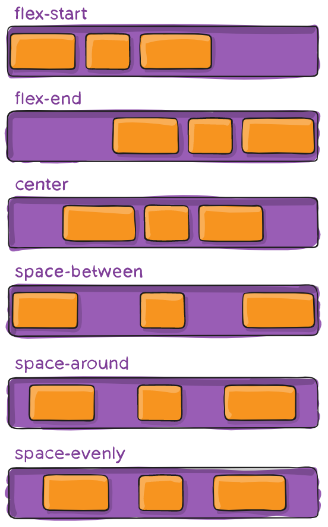
Это свойство определяет выравнивание вдоль главной оси. Оно помогает распределить дополнительный остаток свободного пространства, когда-либо все flex элементы в строке негибкие, либо гибкие, но достигли своего максимального размера. Это также обеспечивает некоторый контроль над выравниванием элементов, когда они переполняют линию.
.container {
justify-content: flex-start | flex-end | center | space-between | space-around | space-evenly | start | end | left | right ... + safe | unsafe;
}
Обратите внимание, что поддержка браузером этих значений имеет свои нюансы. Например, space-between никогда не получал поддержку Edge, а start / end / left / right еще нет в Chrome. В MDN есть подробные графики. Самые безопасные значения это flex-start, flex-end и center.
Есть также два дополнительных ключевых слова, которые вы можете связать с этими значениями: safe и unsafe. Использование safe гарантирует, что как бы вы ни занимались этим типом позиционирования, вы не сможете расположить элемент таким образом, чтобы он отображался за пределами экрана (например, сверху) так, чтобы содержимое тоже не могло быть прокручено (это называется «потеря данных»).
align-items
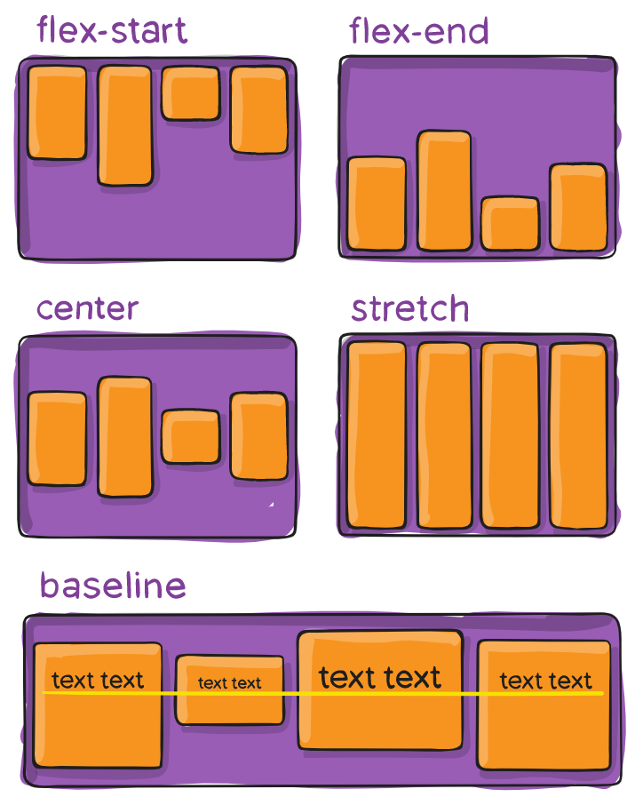
Это свойство определяет поведение по умолчанию того, как flex элементы располагаются вдоль поперечной оси на текущей линии. Думайте об этом как о justify-content версии для поперечной оси (перпендикулярной главной оси).
.container {
align-items: stretch | flex-start | flex-end | center | baseline | first baseline | last baseline | start | end | self-start | self-end + ... safe | unsafe;
}
safe и unsafe ключевые слова модификаторов могут быть использованы в сочетании со всеми из этих ключевых слов (хотя это поддерживается не всеми браузерами), это помогает предотвратить выравнивание элементов таким образом, что содержание становится недоступным.
align-content
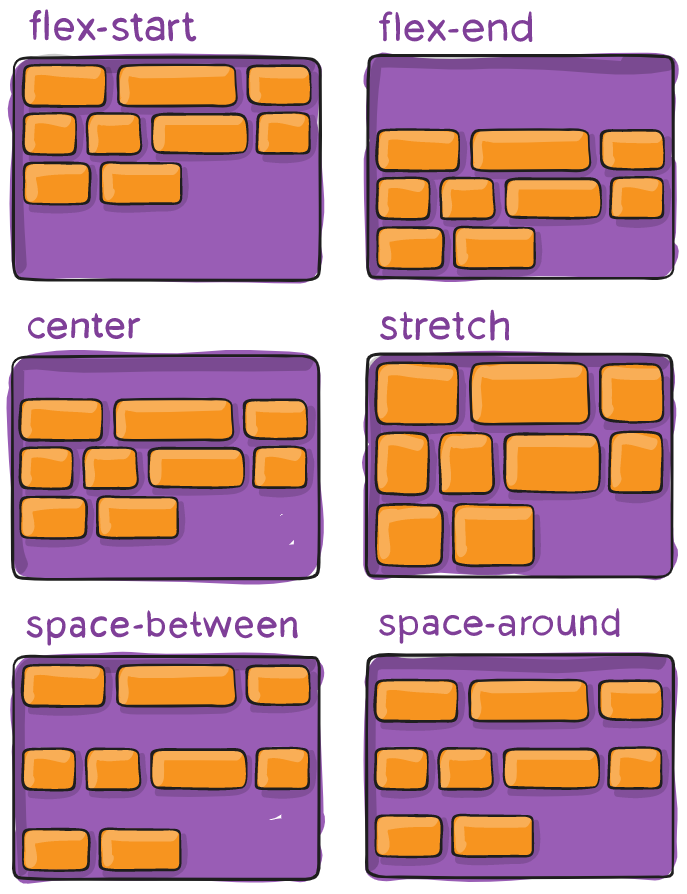
Это свойство выравнивает линии в пределах flex контейнера, когда есть дополнительное пространство на поперечной оси, подобно тому, как justify-content выравнивает отдельные элементы в пределах главной оси.
Примечание: это свойство не действует, когда есть только одна строка flex элементов.
.container {
align-content: flex-start | flex-end | center | space-between | space-around | space-evenly | stretch | start | end | baseline | first baseline | last baseline + ... safe | unsafe;
}
safe и unsafe ключевые слова модификаторов могут быть использованы в сочетании со всеми из этих ключевых слов (хотя это поддерживается не всеми браузерами), это помогает предотвратить выравнивание элементов таким образом, что содержание становится недоступным.
Свойства для первых дочерних элементов(flex элементы)
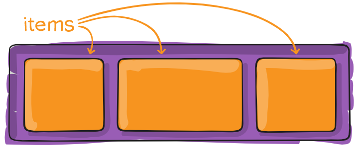
order
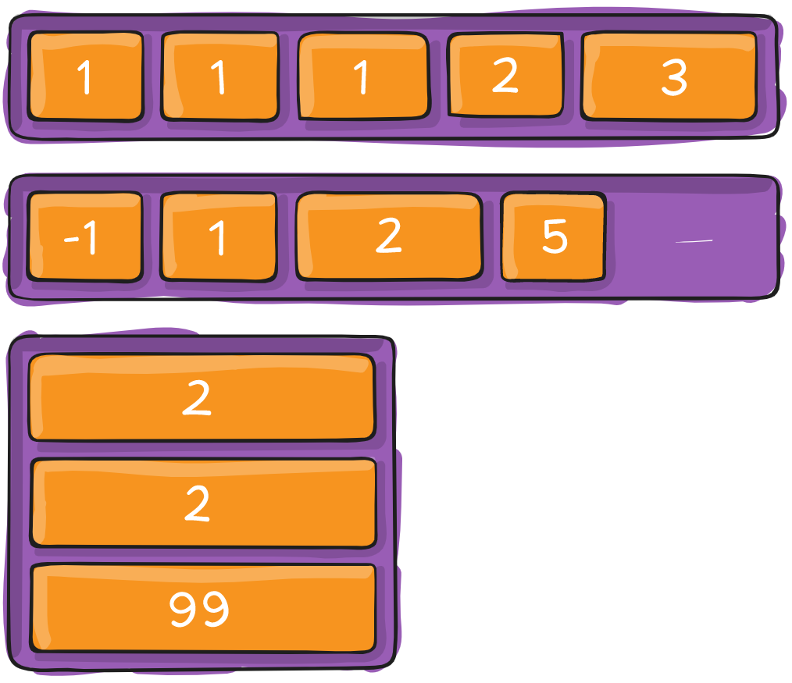
По умолчанию flex элементы располагаются в исходном порядке. Однако свойство order управляет порядком их появления в контейнере flex.
.item {
order: <integer>; /* default is 0 */
}
flex-grow
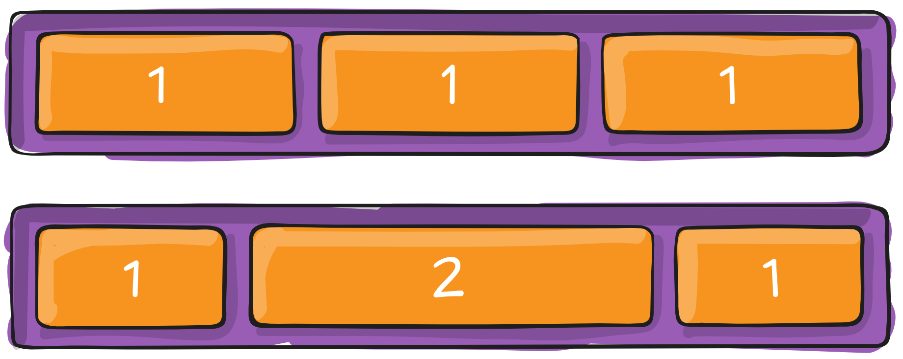
Это свойство определяет способность flex элемента растягиваться в случае необходимости. Оно принимает значение от нуля, которое служит пропорцией. Это свойство, какое количество доступного пространства внутри гибкого контейнера должн занимать элемент.
Если для всех элементов flex-grow установлено значение 1, оставшееся пространство в контейнере будет равномерно распределено между всеми дочерними элементами. Если один из дочерних элементов имеет значение 2, этот элемент займет в два раза больше места, чем остальные (или попытается, по крайней мере).
.item {
flex-grow: <number>; /* default 0 */
}
Отрицательные числа не поддерживаются.
flex-shrink
Это свойство определяет способность гибкого элемента сжиматься при необходимости.
.item {
flex-shrink: <number>; /* default 1 */
}
Отрицательные числа не поддерживаются.
flex-basis
Это свойство определяет размер элемента по умолчанию перед распределением оставшегося пространства. Это может быть длина (например, 20%, 5rem и т.д.) Или ключевое слово. Ключевое слово auto означает «смотри на мое width или height свойство». Ключевое слово content означает «размер на основе содержимого элемента» — это ключевое слово все еще не очень хорошо поддерживается, так что трудно проверить что для него используется max-content, min-content или fit-content.
.item {
flex-basis: <length> | auto; /* default auto */
}
Если установлено значение 0, дополнительное пространство вокруг содержимого не учитывается. Если установлено значение auto, дополнительное пространство распределяется в зависимости от его flex-grow значения.
Смотрите этот рисунок.
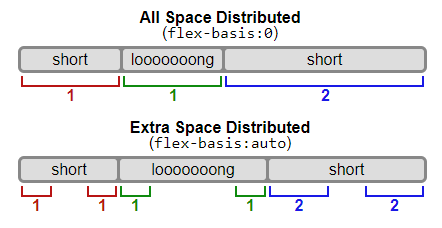
flex
Это сокращение для использования flex-grow, flex-shrink и flex-basis вместе. Второй и третий параметры (flex-shrink и flex-basis) являются необязательными. По умолчанию это 0 1 auto.
.item {
flex: none | [ <'flex-grow'> <'flex-shrink'>? || <'flex-basis'> ]
}
Рекомендуется использовать это сокращенное свойство, а не устанавливать отдельные свойства. Это сокращение разумно устанавливает другие значения.
align-self
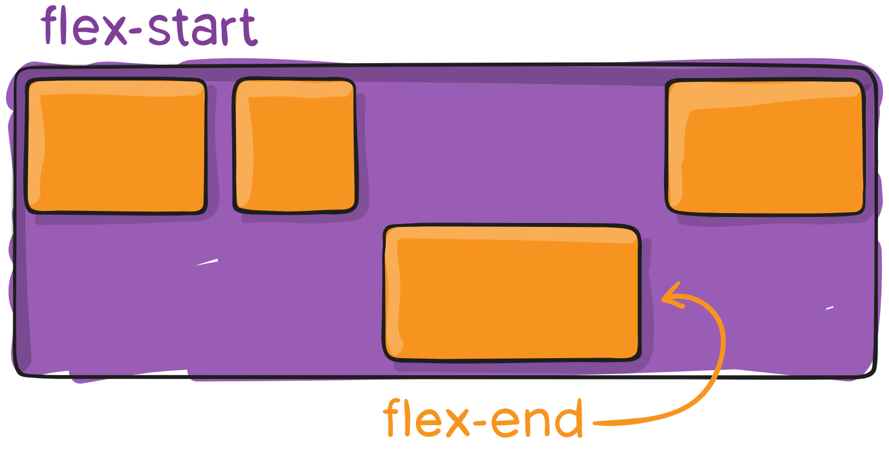
Это свойство позволяет переопределить выравнивание по умолчанию (или указанное с помощью align-items) для отдельных элементов flex.
Пожалуйста, смотрите align-items свойство, чтобы понять доступные значения.
.item {
align-self: auto | flex-start | flex-end | center | baseline | stretch;
}
Обратите внимание что свойства float, clear и vertical-align не влияют на flex элементы.
Примеры
Давайте начнем с очень простого примера, решающего почти ежедневную проблему: идеальное центрирование. Самое простое решение для этой задачи — это использовать flexbox.
.parent {
display: flex;
height: 300px; /* Или что угодно */
}
.child {
width: 100px; /* Или что угодно */
height: 100px; /* Или что угодно */
margin: auto; /* Магия! */
}
Так происходит благодаря тому, что свойство вертикального выравнивания margin установленное в auto во flex контейнере, поглощает дополнительное пространство. Таким образом, установка margin в auto сделает объект идеально отцентрированным по обеим осям.
Теперь давайте используем еще несколько свойств. Рассмотрим список из 6 элементов, все с фиксированными размерами, но могут быть и авторазмеры. Мы хотим, чтобы они были равномерно распределены по горизонтальной оси, чтобы при изменении размера браузера все масштабировалось хорошо и без медиа запросов.
.flex-container {
/* Сначала мы создаем flex контекст */
display: flex;
/* Затем мы определяем flex-direction и разрешаем элементам переходить на новые строки
* Запомните, что это то же самое что и:
* flex-direction: row;
* flex-wrap: wrap;
*/
flex-flow: row wrap;
/* Затем мы определяем, как распределяется оставшееся пространство */
justify-content: space-around;
}
Готово. Все остальное — это просто стайлинг.
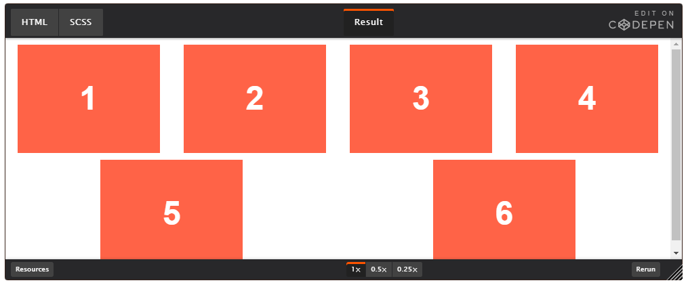
Если изменить разрешение экрана ли масштаб, то будет так:
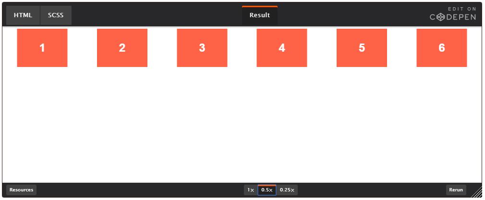
Давайте попробуем что-нибудь еще. Представьте, что у нас есть выровненные по правому краю элементы навигации в верхней части нашего веб-сайта, но мы хотим, чтобы они были выровнены по ширине на экранах среднего размера и располагались в один столбец на небольших устройствах. Это достаточно просто.
/* Большие экраны */
.navigation {
display: flex;
flex-flow: row wrap;
/* Это выровняет элементы по конечной части линии на главной оси */
justify-content: flex-end;
}
/* Средние экраны */
@media all and (max-width: 800px) {
.navigation {
/* На экранах среднего размера мы центрируем элементы, равномерно распределяя пустое пространство вокруг элементов */
justify-content: space-around;
}
}
/* Маленькие экраны */
@media all and (max-width: 500px) {
.navigation {
/* На маленьких экранах мы больше не используем направление строки, а используем столбец */
flex-direction: column;
}
}
Большие экраны
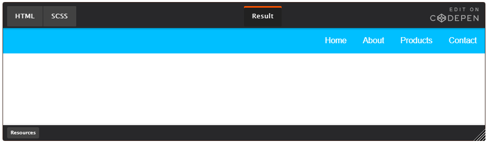
Средние экраны
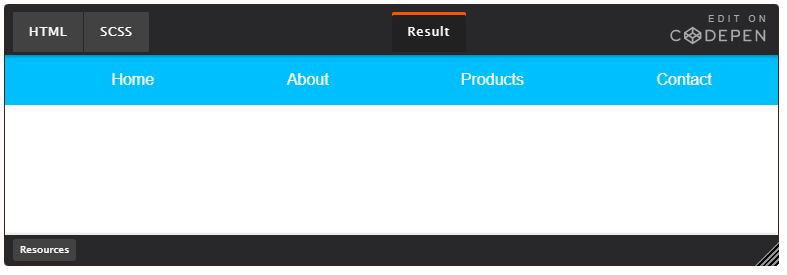
Маленькие экраны
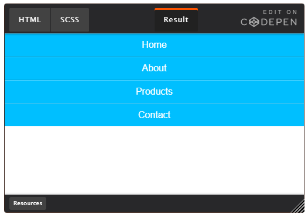
Давайте попробуем что-то еще лучше, играя с гибкостью flex элементов! Как насчет 3-колоночного макета в полную высоту страницы с хедором и футером. И не зависит от исходного порядка элементов.
.wrapper {
display: flex;
flex-flow: row wrap;
}
/* Мы говорим, что все элементы имеют ширину 100%, через flex-base */
.wrapper > * {
flex: 1 100%;
}
/* Мы используем исходный порядок для первого мобильно варианта
* 1. header
* 2. article
* 3. aside 1
* 4. aside 2
* 5. footer
*/
/* Средние экраны */
@media all and (min-width: 600px) {
/* Мы говорим обеим боковым панелям встать в одну строку */
.aside { flex: 1 auto; }
}
/* Большие экраны */
@media all and (min-width: 800px) {
/* Мы инвертируем порядок первой боковой панели и основной и говорим главному элементу, чтобы он занимал вдвое большую ширину, чем две другие боковые панели
*/
.main { flex: 2 0px; }
.aside-1 { order: 1; }
.main { order: 2; }
.aside-2 { order: 3; }
.footer { order: 4; }
}
Большие экраны
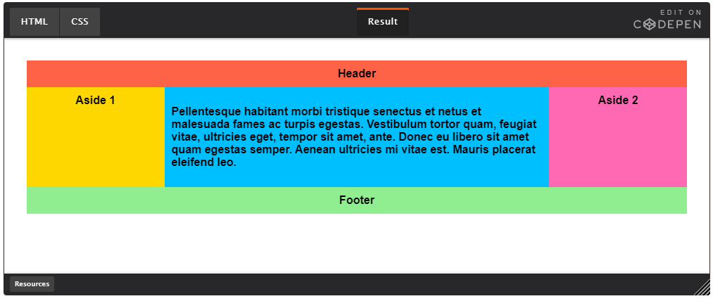
Средние экраны
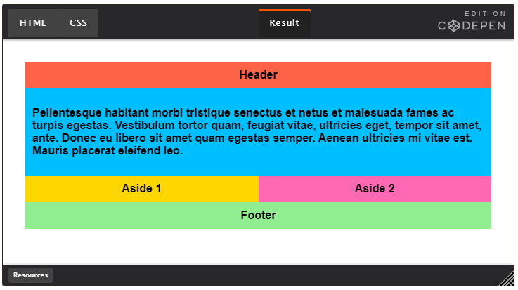
Маленькие экраны
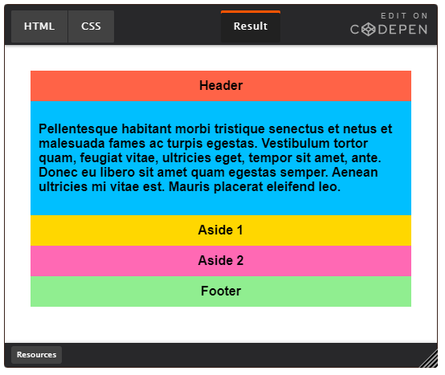
Префикс для Flexbox
Flexbox требует префикса для лучшей поддержки в разных браузерах. Он не только включает в себя предварительные настройки с префиксом вендора, в нем есть совершенно разные имена свойств и значений. Это связано с тем, что спецификации Flexbox со временем менялись, существуют «старые», «tweener» и «новые» версии.
Возможно, лучший способ справиться с этим — написать новый (и последний) синтаксис и запустить свой CSS через Autoprefixer, который очень хорошо справляется с fallback.
Кроме того, вот Sass @mixin, чтобы помочь с некоторыми префиксами, который также дает вам представление о том, что нужно сделать:
@mixin flexbox() {
display: -webkit-box;
display: -moz-box;
display: -ms-flexbox;
display: -webkit-flex;
display: flex;
}
@mixin flex($values) {
-webkit-box-flex: $values;
-moz-box-flex: $values;
-webkit-flex: $values;
-ms-flex: $values;
flex: $values;
}
@mixin order($val) {
-webkit-box-ordinal-group: $val;
-moz-box-ordinal-group: $val;
-ms-flex-order: $val;
-webkit-order: $val;
order: $val;
}
.wrapper {
@include flexbox();
}
.item {
@include flex(1 200px);
@include order(2);
}
Другие источники
Flexbox, конечно, не без ошибок. Лучшая коллекция из них, которую я видел, — это Flexbugs Филипа Уолтона и Грега Витворта. Это репозиторий с открытым исходным кодом для отслеживания всех из них, поэтому я думаю, что лучше всего просто сослаться на него.
Поддержка в браузерах
Разбита по «версии» flexbox:
�